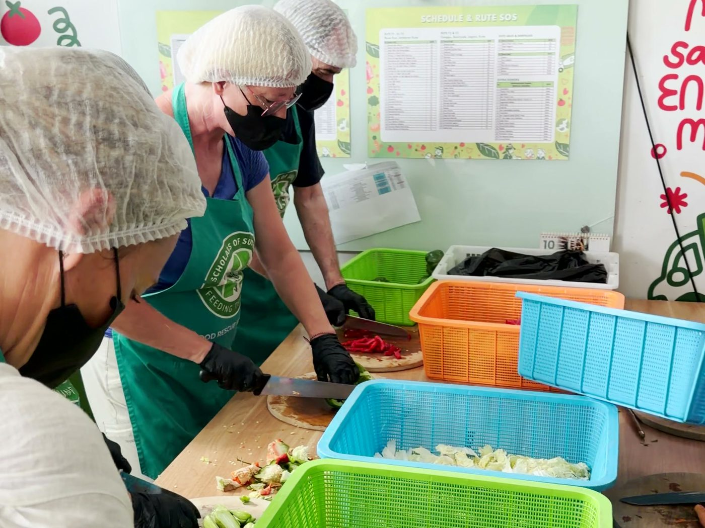
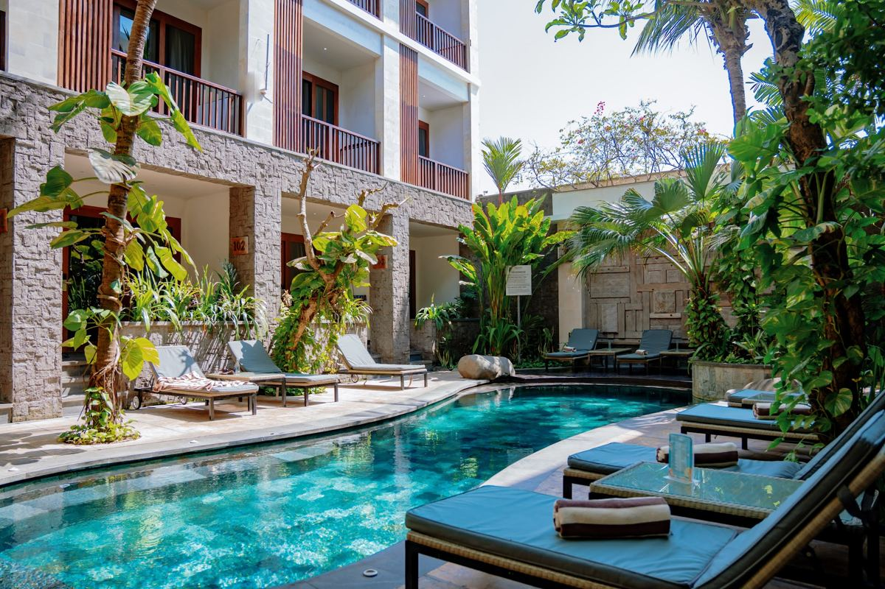
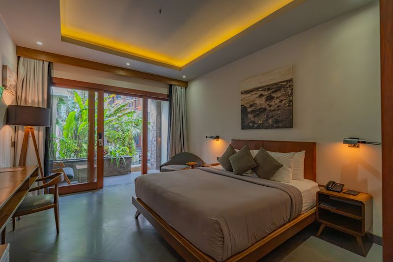
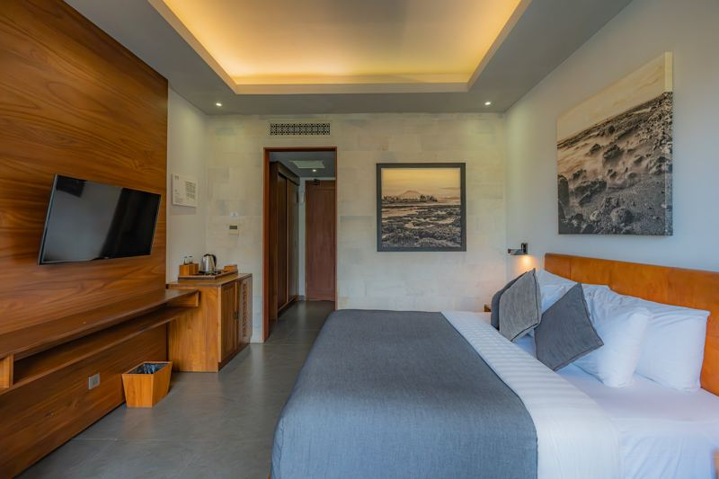

Stimmen aus Bali, Oktober 2026
Das sagen unsere Gäste.
Kurze Interviews, aufgenommen während unseres ersten Retreats im Oktober 2026 auf Bali.
Worum es geht
Mehr Lebensqualität. Nicht nur mehr Lebenszeit.
Wie lange wir leben, ist nur die eine Frage. Die andere ist, wie viele dieser Jahre wir in guter Verfassung verbringen.
Die Lebensspanne beschreibt, wie lange wir leben. Die Gesundheitsspanne, englisch Healthspan, meint die Jahre, die wir bei guter Gesundheit verbringen. Um die zweite Zahl geht es in dieser Woche: Du lernst Gewohnheiten rund um Bewegung, Ernährung und Erholung kennen und probierst sie aus.
Vieles davon entscheidet sich im Alltag: wie wir uns bewegen, essen, schlafen und mit Stress umgehen.
In dieser Woche bekommst du verständliches Wissen dazu und die Zeit, es auszuprobieren, bevor der Alltag wieder da ist.
Zwei Orte, ein Retreat
Bali oder Thailand. Du hast die Wahl.

Option 1 · Bali
2. bis 9. Februar 2027
- Grün Canggu, ein ruhiges Resort im tropischen Grün
- Wasserzeremonie Melukat, Feuerzeremonie, Pyramids of Chi
- Ein Vormittag in der Rescue Kitchen von SOS Bali
- Programm 1.390 €, Unterkunft ab 390 € pro Woche
Option 2 · Thailand
4. bis 11. Mai 2027
- Ein Wellness-Resort in Rawai, im ruhigen Süden von Phuket
- Segen der Mönche, Abendgebet im Tempel, Big Buddha
- Besuch der Soi Dog Foundation und ein freier Tag für eigene Ausflüge
- Programm 1.390 €, Unterkunft ab rund 405 € pro Woche
Egal, ob du nach Bali oder nach Thailand kommst: Bei Stefan machst du Yoga und Meditation, bei Danny trainierst du, und Coachings und Vorträge gibt es in beiden Wochen. Anders sind vor allem die Ausflüge und Rituale. Auf Bali gehen wir zur Wasserzeremonie, in Thailand segnen uns die Mönche.


Das Programm
Was dich erwartet
- Bewegung, die zu deinem Körper und deiner Lebenssituation passt, für Anfänger und Fortgeschrittene
- Yoga und Meditation
- Wir vermitteln Wissen ohne Fachchinesisch
- Medizin: was die Forschung heute über gesundes Älterwerden weiß, verständlich erklärt
- Unser Essen ist die ganze Woche auf Longevity ausgerichtet, und du lernst viel über Ernährung
- Wir lernen Land und Leute kennen, mit Tempeln, Ritualen und Projekten vor Ort
- Und das alles in einer kleinen Gruppe
Was es nicht ist
- Kein Bootcamp
- Kein Fastenprogramm
- Keine Klinik
- Kein Leistungsdruck
- Keine Selbstoptimierung
- Keine leeren Versprechen
Ein Tag auf Bali
So sieht ein Tag im Retreat aus.
Zum Beispiel der Tag mit SOS Bali und dem Lunch im Malaika Secret Home.
Meditation und Yoga
Mit Stefan in der Yoga-Shala, danach gemeinsames Frühstück in der Villa.
Rescue Kitchen bei SOS Bali
In Sanur bereiten wir mit dem Team von Scholars of Sustenance Mahlzeiten für Menschen in Not zu.
Lunch im Malaika Secret Home
Ein langes gemeinsames Essen, die Kürbissuppe kommt im ausgehöhlten Kürbis auf den Tisch.
Zurück in der Villa
Zeit für dich am Pool oder, nach Anmeldung, ein Einzelcoaching mit Tatjana.
Dinner zusammen
Wir essen gemeinsam in der Villa und lassen den Tag ausklingen.
Nicht jeder Tag ist so voll. An anderen Tagen stehen Training mit Danny, Workshops und Vorträge auf dem Plan, und es bleibt mehr freie Zeit. In Thailand ist der Rhythmus derselbe. Im Einzelnen kann sich der Ablauf noch ändern.
Ernährung
Die ganze Woche auf Longevity ausgerichtet.
Was auf den Tisch kommt, gehört bei uns zum Programm. Frühstück und Abendessen richten sich nach dem, was du in dieser Woche über Ernährung liest und hörst. Auf Bali kocht unser Koch in der Villa, in Thailand die Küche des Resorts.
Auf dem Teller
Überwiegend pflanzlich
Viel Gemüse und Hülsenfrüchte, dazu Nüsse, gute Öle und Fisch, wenig zugesetzter Zucker und Weißmehl. Zum Frühstück und zum Abendessen gibt es jeweils eine Eiweißquelle.
Im Vortrag
Wissen mit Dr. Volker Manz
Der Ernährungswissenschaftler erklärt, was die Forschung zu Ernährung und Langlebigkeit zeigt und wo sie noch dünn ist.
In der Küche
Selbst zubereiten
Im Kochkurs kochst du mit, auf Bali mörserst du außerdem im Jamu-Workshop frische Wurzeln und Gewürze. Die Rezepte stehen in deinem Begleitheft.
Am Tisch
Zusammen und ohne Hast
Wir essen gemeinsam und nehmen uns dafür Zeit. Frühstück und Abendessen gibt es zu festen Zeiten.
Auf Bali sind Frühstück und Abendessen im Programmpreis enthalten, außer am freien Samstagabend. In Thailand ist das Frühstück im Zimmerpreis enthalten und das Abendessen im Programmpreis. Mittags sorgst du meist selbst für dich, eine Liste mit Lokalen in der Nähe bekommst du von uns. Welche Mittagessen bei Ausflügen dabei sind, steht in der Leistungsliste.


Stimmen aus Bali, Oktober 2026
Was unsere Gäste danach geschrieben haben.
„Was ich in dieser Woche erleben durfte, war weit mehr als ein Retreat.“
„Ich glaube, das Besondere war nicht nur das, was wir gemeinsam erlebt haben, sondern vor allem der Raum, den wir füreinander geöffnet haben.“
„Für mich war es […] ein Sprung ins kalte Wasser. Aber genau das war wichtig und richtig für mich.“
„Es ist vielleicht das schönste, intensivste und emotionalste Erlebnis meines Lebens.“
„Diese Tage auf Bali, einfach unbezahlbar und unvergesslich. Wir sind zu einer Einheit geworden. […] Es war magisch.“
„Es ist wie Familie.“
Aus dem Begleitheft
Sechs Dinge, die du schon vorher wissen kannst.
Alle Gäste bekommen ein gedrucktes Begleitheft. Mehrere Kapitel sind mit dem Team entstanden, das dich in der Woche begleitet. Hier sechs Anregungen daraus, zum Lesen und Ausprobieren.
Bewegung
613 Min.
Sitzzeit an einem Werktag.
So viel Sitzzeit gaben Erwachsene in Deutschland im DKV-Report 2025 im Schnitt an, also gut zehn Stunden. Sitzen ist nicht das neue Rauchen, wie es oft heißt. Weniger sitzen und mehr Bewegung im Alltag lohnen sich trotzdem.
Unterbrich lange Sitzphasen. Stell dir zum Beispiel eine Erinnerung, jede Stunde aufzustehen und ein paar Schritte zu gehen. Sportkleidung brauchst du dafür nicht.
Muskeln
ab 30
Muskelmasse kann langsam abnehmen.
Bei vielen Menschen beginnt das etwa ab dem 30. Lebensjahr. Wann und wie stark, ist sehr unterschiedlich. Krafttraining kann dem entgegenwirken, auch im höheren Alter. Muskeln tragen dich durch den Alltag und speichern Energie in Form von Glykogen.
Balance
1 Bein
Eine kleine Gleichgewichtsübung.
Für das Gleichgewicht verarbeitet das Gehirn Informationen aus den Augen, dem Innenohr und dem ganzen Körper. Gleichgewicht lässt sich üben, und es lässt nach, wenn wir es nie fordern.
Stell dich neben eine stabile Arbeitsplatte, an der du dich festhalten kannst. Heb einen Fuß leicht an und bleib so lange stehen, wie du dich sicher fühlst.
Atmung
4 : 6–8
Länger aus- als einatmen.
Langsames, bewusstes Atmen kann helfen, zur Ruhe zu kommen. Eine Wunderwaffe gegen Stress ist es nicht. Aber du hast es immer dabei, vor einem Gespräch genauso wie nachts um drei.
Setz dich bequem hin. Atme etwa vier Sekunden ein und lass die Ausatmung länger werden, sechs bis acht Sekunden, wenn es angenehm ist. Erzwinge nichts. Wird dir schwindelig, atme normal weiter.
Ernährung
10 Min.
Nach dem Essen eine Runde gehen.
Ein kurzer Spaziergang nach dem Essen kann den Anstieg des Blutzuckers danach verringern. Untersucht wurde das unter anderem bei Menschen mit Typ-2-Diabetes. Zehn Minuten sind ein Vorschlag für den Alltag, keine feste Grenze.
Achte auch auf genug Eiweiß und verteile es auf mehrere Mahlzeiten. Für gesunde Menschen ab 65 empfiehlt die DGE pro Kilogramm Körpergewicht etwas mehr als für Jüngere.
Okinawa
80 %
Auf die eigene Sättigung achten.
Auf Okinawa kennt man die Essensregel Hara Hachi Bu: Hör auf, wenn du ungefähr zu achtzig Prozent satt bist. Das ist eine alte Faustregel und kein messbarer Gesundheitswert.
Iss langsam und halte zwischendurch kurz inne. Bist du noch hungrig oder nur noch nicht voll?
Die Informationen hier und im Begleitheft dienen der allgemeinen Orientierung. Sie ersetzen keine ärztliche Beratung. Wenn du Beschwerden hast, lass ärztlich abklären, welche Übungen für dich passen.
Das Team 2027
Das sind unsere Experten.

Yoga und Meditation · vor Ort
Stefan Schleich-Kehr
Unterrichtet seit über fünfzehn Jahren, für Anfänger wie für Geübte.

Bewegung · vor Ort
Danny Paul Kiel
Sportwissenschaftler, zertifiziert im Functional Movement Screen. Er macht am ersten Programmtag einen Fitness-Check mit dir und wiederholt ihn am letzten.

Coaching · vor Ort
Tatjana Brünjes
Sie führt vertrauliche Einzelgespräche. Die Termine sind begrenzt und werden vor Ort nach Anmeldung vergeben.

Ernährung
Dr. Volker Manz
Ernährungswissenschaftler und Co-Autor von „Was können wir überhaupt noch essen?“. Er erklärt Studienlagen verständlich und sagt ehrlich, wo die Forschung dünn ist.
Medizin
Dr. med. Delia Letizia Francia
Ärztin und Expertin für Longevity. Sie hat jahrelang zu Zellregeneration und Stammzellen geforscht.
Dein Gastgeber
Ron Perduss
Verbraucherjournalist, bekannt aus Radio und Fernsehen. Ron prüft seit vielen Jahren, ob Produkte halten, was Anbieter versprechen. Er hat das Retreat ins Leben gerufen und ist die ganze Woche dabei.
Option 1
Bali im Februar.
2. bis 9. Februar 2027 im Grün Canggu. Programm 1.390 €, Unterkunft ab 390 € pro Woche. Wer länger bleibt, bekommt bei fünf Hotels Sonderpreise für die Woche danach.
Erlebnisse auf Bali
Das erlebst du auf Bali.
Wasser
Melukat in Griya Beji
Ein balinesisch-hinduistisches Reinigungsritual mit heiligem Wasser bei Ubud. Ibu Sri begleitet die Zeremonie. Ein Moment zum Innehalten, mitten in der Natur.
Tradition
Jamu-Workshop
Jamu ist ein traditionelles Kräutergetränk aus Indonesien und gehört dort seit Generationen zum Alltag. Du bereitest es selbst zu: Du mörserst frische Wurzeln und Gewürze wie Kurkuma und Ingwer und presst sie aus. Ein Fläschchen nimmst du mit.
Ernährung
Kochkurs
Ernährung ist ein wichtiger Baustein für ein langes, gesundes Leben. Im Kochkurs lernst du, frische und gesunde Gerichte selbst zuzubereiten. Danach essen wir zusammen, was wir gekocht haben.
Helfen
Rescue Kitchen mit SOS Bali
Mit der Hilfsorganisation Scholars of Sustenance kochst du in der Gruppe Mahlzeiten aus geretteten Lebensmitteln. Danach verteilt ihr sie an Menschen, die an der Mülldeponie Suwung leben und arbeiten. Etwas für andere zu tun, gehört für uns zu einem guten Leben dazu.
Genuss
Lunch im Malaika Secret Home
Ein besonderes Mittagessen im Malaika Secret Home, einem Restaurant mit einem verwunschenen Garten. Gutes Essen ist auch Genuss und Gemeinschaft.
Klang
Sound Healing am Pool
Eine Stunde mit Klangschalen am Pool, zum Ausklang der Woche. Zeit zum Zuhören und Ausruhen.
Ubud
Pyramids of Chi
Ein Ausflug zu den Pyramids of Chi in Ubud. Du liegst und hörst Gongs und weitere Instrumente, ein Klangerlebnis zum Abschalten.
Pflege
Facial im Spa
Eine kosmetische Behandlung in einem balinesischen Spa, im Programmpreis enthalten. Zeit für deine Haut und zum Entspannen.
Kälte
Eisbaden mit Danny
Wer mag, steigt mit Danny ins Eisbad. Er erklärt vorher, wie du atmest, dann geht es für ein, zwei Minuten ins kalte Wasser. Freiwillig und nach einer kurzen Gesundheitsabfrage.


Die Woche auf Bali
Acht Tage auf einen Blick.
An fünf Morgen Meditation und Yoga mit Stefan, danach Frühstück.
Wo du auf Bali wohnst
Grün Canggu.
Ein privates Resort in der Nähe von Canggu, abgeschieden und ruhig mitten im tropischen Grün. Viel Holz, Glas und Grün, eingebettet in die Natur.
Longevity-Villa
Unsere eigene Villa
Mit eigener Küche, großem Wohnbereich, Workshop-Bereich, Yoga-Shala, Bibliothek, großem Garten und privatem Pool.
In der Villa
Doppelzimmer
Schöne Doppelzimmer, verteilt über die Villa, teilweise mit Terrasse und Blick auf die Reisfelder.
Baumhaus
Ein eigenes Haus
Baumhäuser über mehrere Ebenen, mitten im Grün.
Suite oder Private Villa
Mehr Platz
Die Private Villa hat einen eigenen Pool.
Die Unterkunft kostet ab 390 € pro Woche.


Bali · Termin und Preis
Bali im Februar 2027.
Termin
2. bis 9. Februar 2027
Ort
Grün Canggu, Bali
Plätze
höchstens 20
Preisliste
| Leistung | Preis pro Person |
|---|---|
| ProgrammSieben Tage mit Frühstück und Abendessen, Training, Yoga, Coaching, Vorträgen, Workshops und Ausflügen | 1.390 € |
| Dazu kommt die Unterkunft im Grün Canggu, sieben Nächte | ab 390 € |
Alle Preise in Euro pro Person, inklusive Steuern. Den genauen Preis für deine Unterkunft nennen wir dir mit deiner Zimmerwahl.
Im Programmpreis enthalten
- Frühstück jeden Tag, Abendessen an allen Abenden außer dem freien Samstag, gekocht vom Koch in der Villa
- Meditation und Yoga am Morgen, an fünf Tagen
- Training mit Fitness-Check am ersten und am letzten Programmtag
- Einzelcoaching nach Anmeldung vor Ort, die Termine sind begrenzt
- Online-Vorträge von Fachleuten zu Ernährung und Medizin
- Melukat in Griya Beji mit Mittagessen
- Rescue Kitchen bei SOS Bali
- Lunch im Malaika Secret Home
- Jamu-Workshop, Kochkurs, Feuerzeremonie und Sound Healing am Pool
- Klangerlebnis bei Pyramids of Chi in Ubud
- Ein Facial im Spa
- Eisbaden mit Danny, freiwillig
- Fahrten zu den Ausflügen
- Yoga-Ausrüstung und das Begleitheft zum Retreat
Nicht enthalten
- Unterkunft (siehe oben)
- Flug nach Denpasar und Flughafentransfer
- Visum und Reiseversicherung
- Mittagessen an Tagen ohne Ausflug und das Abendessen am freien Samstag
- Persönliche Ausgaben
Zwei Wochen Bali
Bleib eine Woche länger.
Wenn du schon nach Bali fliegst, lohnt sich eine zweite Woche. Häng sie nach dem Retreat an oder komm eine Woche früher. Zur Wahl stehen drei ganz verschiedene Seiten der Insel.
Ostküste
Sanur
Strandpromenade und ruhiges Meer.
Westküste
Canggu
Surfstrände, Cafés und Reisfelder.
Inselinneres
Ubud
Reisfelder, Tempel und Kunsthandwerk.
Die Woche im Hotel
ab rund 185 €
Pro Zimmer und sieben Nächte, mit Frühstück. Sonderpreise für unsere Gäste, siehe unten.
Unsere Hotelangebote für 9. bis 16. Februar 2027
Diese Hotels haben uns Sonderpreise für Gäste unseres Retreats genannt. Sie gelten für die Woche danach, vom 9. bis 16. Februar 2027, pro Zimmer für sieben Nächte.



Sanur
Akana Boutique Hotel
Kleines Boutiquehotel mit 36 Zimmern, etwa 1,7 km vom Zentrum von Sanur.
7,0 Mio. IDR
9,1 Mio. IDR
- Frühstück, Steuern und Service inklusive
- Eine Nacht Anzahlung pro Zimmer, nicht erstattbar, den Rest zahlst du beim Check-in
- Gleicher Preis auch in der Woche vor dem Retreat, vom 26. Januar bis 2. Februar 2027
- Nur wenige Zimmer zu diesem Preis, früh buchen lohnt sich
So buchst du: per Mail an reservation@akanasanur.com, Stichwort „Longevity Retreat Bali“.
Fotos: Akana Boutique Hotel
Sanur
Taman Agung Hotel
Etwa 600 m vom Zentrum von Sanur. Die Deluxe-Zimmer liegen in verschiedenen Gebäuden, manche klassisch, manche modern eingerichtet.
4,9 Mio. IDR
- Frühstück inklusive
- Flughafentransfer gegen Aufpreis
- Anzahlung per Überweisung. Bei Storno gibt es sie nicht zurück, du kannst sie aber für eine spätere Buchung nutzen
So buchst du: per Mail an info@tamanagunghotel.com oder per WhatsApp an +62 812 3928 1546, Stichwort „Longevity Retreat Bali“.
Canggu
Casa Amarta
Etwa 1,4 km vom Zentrum von Canggu.
3,85 Mio. IDR
5,25 Mio. IDR
- Frühstück, Steuern, Service und WLAN inklusive
- Begrüßungsgetränk und ein Atlas Day Pass gratis
- 30 % Rabatt auf Massagen im hauseigenen Wellnessbereich
- Später Check-out und Upgrade, wenn frei
- 50 % Anzahlung, nicht erstattbar, den Rest zahlst du bei Ankunft
So buchst du: per Mail an hello@casaamarta.com oder per WhatsApp an +62 813 8228 8669, mit dem Code DIRECT2027.
Pererenan bei Canggu
Lokale Resorts & Villas
In Pererenan, dem Nachbarort von Canggu. Zimmer und Cottages, dazu Villen mit eigenem Pool.
zu zweit rund 308 €
5,705 / 6,405 Mio. IDR
zu zweit rund 330 €
6,16 / 6,86 Mio. IDR
zu zweit rund 418 €
7,994 / 8,694 Mio. IDR
zu zweit rund 613 €
12,04 / 12,74 Mio. IDR
- Frühstück, Steuern und Service inklusive
- Pool und Fitnessraum ohne Aufpreis
- Alle Zimmer mit Doppelbett, getrennte Decken auf Wunsch
- 50 % Anzahlung. Wer weniger als 7 Tage vor Anreise absagt oder nicht kommt, zahlt den vollen Preis
So buchst du: per Mail an info@lokalepererenan.com oder telefonisch unter +62 822 2187 8150, Stichwort „Ron Perduss Group“.
Ubud
Kahayana Suites
Etwa 5 km außerhalb des Zentrums von Ubud.
5,425 Mio. IDR
6,125 Mio. IDR
8,75 Mio. IDR
9,8 Mio. IDR
- Gleicher Preis für eine oder zwei Personen, Frühstück für zwei, Steuern und Service inklusive
- Kostenlose Fahrt ins Zentrum von Ubud, donnerstags bis sonntags nach Fahrplan
- Canang-Kurs, das sind die kleinen balinesischen Opfergaben, jeden Donnerstag
- Kostenlos stornierbar, wenn du mehr als 45 Tage vor Anreise absagst
So buchst du: frag uns kurz.
Maßgeblich ist der Preis in Rupiah. Die Euro-Beträge sind gerundet, umgerechnet mit 20.800 Rupiah je Euro, deine Bank kann anders umrechnen. Alles gilt nur, solange Zimmer frei sind.
Die zusätzliche Woche gehört nicht zum Retreat. Das Hotel buchst und bezahlst du selbst, direkt beim Haus.


Option 2
Thailand im Mai.
4. bis 11. Mai 2027 in einem Wellness-Resort in Rawai, im ruhigen Süden von Phuket. Programm 1.390 €, Unterkunft ab rund 405 € pro Woche. Dasselbe Team, derselbe Tagesrhythmus, andere Rituale.
Erlebnisse in Thailand
Das erlebst du in Thailand.
Segen
Mönche im Resort
Mönche aus einem Tempel kommen zu uns ins Resort. Wir reichen ihnen das Essen, sie rezitieren und segnen jeden von uns mit einem weißen Faden ums Handgelenk.
Feiertag
Abendgebet im Tempel
Der 5. Mai ist ein buddhistischer Mondtag (Wan Phra), an dem viele Thais in den Tempel gehen. Am Abend hören wir das Gebet der Mönche und meditieren danach gemeinsam.
Ausblick
Wat Chalong und Big Buddha
Der bekannteste Tempel der Insel und die große Buddha-Statue auf dem Nakkerd-Hügel. Dort oben meditieren wir mit Blick über die Insel.
Helfen
Soi Dog Foundation
Ein Tierschutzprojekt im Norden der Insel, das sich um Straßenhunde und -katzen kümmert. Wir besuchen es und übergeben eine Spende der Gruppe.
Altstadt
Mittag in Phuket Town
Nach dem Besuch bei Soi Dog essen wir in der Altstadt zu Mittag und gehen durch die Gassen mit den alten Kaufmannshäusern.
Tradition
Kräuterstempel binden
Im Spa des Resorts zerkleinerst du frische Kräuter und bindest sie zu einem Stempel, wie er bei der Thai-Massage verwendet wird.
Ernährung
Thai-Kochkurs
Du kochst thailändische Gerichte selbst, und was wir gekocht haben, essen wir zusammen zu Abend.
Licht
Lichterabend
Am vorletzten Abend zündet jeder eine Kerze an und nimmt sich eine Sache für zu Hause vor. Danach restoratives Yoga mit Stefan.
Klang
Klangschalen-Meditation
Eine Stunde mit Klangschalen zum Ausklang der Woche. Zeit zum Zuhören und Ausruhen.
Kälte
Eisbaden mit Danny
Wer mag, steigt mit Danny ins Eisbad. Er erklärt vorher, wie du atmest, dann geht es für ein, zwei Minuten ins kalte Wasser. Freiwillig und nach einer kurzen Gesundheitsabfrage.
Freiheit
Ein freier Tag
Am Samstag hast du frei. Wer möchte, fährt zur James-Bond-Insel in der Phang-Nga-Bucht oder zu den Phi-Phi-Inseln. Wir geben dir Tipps für Anbieter mit Abholung am Resort, gebucht und bezahlt wird direkt beim Anbieter. Der Ausflug ist nicht im Preis enthalten.
Die Woche in Thailand
Acht Tage auf einen Blick.
An fünf Morgen Meditation und Yoga mit Stefan, danach Frühstück. Mittags ist Pause.
Wo du in Thailand wohnst
Ein Wellness-Resort in Rawai.
Villen und Zimmer im ruhigen Süden von Phuket, mit Spa, Pool und zwei Räumen für Yoga und Meditation.
Yoga im Freien
Offener Pavillon
Aus Teakholz, für Yoga an der frischen Luft.
Yoga drinnen
Geschlossener Raum
Mit Klimaanlage, auch bei Regen.
Erholung
Spa und Pool
Im Resort, für die freie Zeit.
Umgebung
Rawai
Die Strände von Rawai und Nai Harn und das Promthep Cape liegen in der Nähe.
Die Unterkunft mit Frühstück kostet pro Person und Woche ab rund 405 € im Doppelzimmer mit einem Bett, ab rund 500 € mit getrennten Betten und ab rund 635 € im Einzelzimmer. Das Abendessen ist im Programmpreis enthalten.
Thailand · Termin und Preis
Thailand im Mai 2027.
Termin
4. bis 11. Mai 2027
Ort
Rawai, Phuket
Plätze
höchstens 20
Preisliste
| Leistung | Preis pro Person |
|---|---|
| ProgrammSieben Tage mit Abendessen, Training, Yoga, Coaching, Vorträgen, Workshops und Ausflügen | 1.390 € |
| Dazu kommt die Unterkunft im Resort, sieben Nächte mit Frühstück | ab rund 405 € |
Im Preis enthalten
- Abendessen an allen Abenden, am Sonntag als gemeinsamer Kochkurs
- Meditation und Yoga mit Stefan am Morgen, an fünf Tagen
- Training mit Fitness-Check am ersten und am letzten Programmtag
- Einzelcoaching nach Anmeldung vor Ort, die Termine sind begrenzt
- Online-Vorträge von Fachleuten zu Ernährung und Medizin
- Segnung durch Mönche im Resort und Abendgebet im Tempel
- Wat Chalong und Big Buddha
- Soi Dog Foundation und Mittagessen in der Altstadt
- Kräuterstempel-Workshop, Thai-Kochkurs, Lichterabend und Klangschalen-Meditation
- Eisbaden mit Danny, freiwillig
- Fahrten zu den Ausflügen
- Yoga-Ausrüstung und das Begleitheft zum Retreat
Nicht enthalten
- Unterkunft mit Frühstück (siehe oben)
- Flug nach Phuket und Flughafentransfer
- Reiseversicherung
- Mittagessen, außer am Ausflugstag in der Altstadt
- Ausflüge am freien Tag
- Persönliche Ausgaben
Praktisches
Was du wissen musst.
Muss ich sportlich sein?
Nein. Das Programm ist für unterschiedliche Fitnesslevel gedacht, und die Übungen werden an dein Niveau angepasst.
Kann ich allein kommen?
Ja, gern. Im Oktober kannten sich die meisten vorher nicht.
Bali oder Thailand: Was ist anders?
Team, Tagesrhythmus, Trainings, Coachings und Vorträge sind gleich. Anders sind die Rituale und Ausflüge: auf Bali Melukat, Feuerzeremonie und SOS Bali, in Thailand der Segen der Mönche, ein Tempelabend, Soi Dog und ein freier Tag für eigene Ausflüge. Und das Wetter: im Februar Regenzeit auf Bali, im Mai Hitze und der Beginn der Regenzeit auf Phuket.
Wie komme ich hin?
Nach Bali fliegst du zum Flughafen Denpasar (DPS), meist mit einem Umstieg, zum Beispiel über Dubai, Doha oder Singapur. Je nach Verbindung dauert die Reise rund 16 bis 18 Stunden. Nach Thailand fliegst du zum Flughafen Phuket (HKT), ebenfalls meist mit einem Umstieg, zum Beispiel über Bangkok, Dubai oder Doha. Vom Flughafen Phuket bis zum Resort fährt man je nach Verkehr 60 bis 90 Minuten. Den Flug buchst du selbst.
Brauche ich ein Visum?
Für Bali bekommen deutsche Staatsangehörige derzeit ein Visum bei der Einreise. Der Reisepass muss noch mindestens sechs Monate gültig sein. Die Regeln ändern sich gelegentlich, bitte vor der Reise beim Auswärtigen Amt prüfen.
Für einen kurzen Urlaub in Thailand brauchen deutsche Staatsangehörige derzeit kein Visum. Wie lange du bleiben darfst und welche Nachweise du brauchst, zum Beispiel für den Rückflug, ändert sich gelegentlich. Kurz vor der Einreise füllst du online die kostenlose digitale Einreisekarte aus, die TDAC. Bitte vor der Reise beim Auswärtigen Amt prüfen.
Wie ist das Wetter?
Februar ist auf Bali Regenzeit. Das heißt meist kurze, kräftige Schauer, oft am Nachmittag, danach ist es wieder warm. Rechne mit rund 28 Grad und hoher Luftfeuchtigkeit.
Im Mai ist es auf Phuket heiß und feucht, meist über 30 Grad. Der Mai liegt im Übergang zur Regenzeit, auch Anfang Mai sind kräftige Schauer und Seegang möglich. Bootsausflüge können wetterbedingt kurzfristig ausfallen.
Was ist mit Unverträglichkeiten?
Sag uns bei der Anmeldung Bescheid. Wir klären dann mit der Küche, was möglich ist.
Kann ich länger bleiben?
Ja, viele verbinden das Retreat mit Urlaub. Für Bali stehen hier die Sonderpreise von Hotels in Sanur, Canggu und Ubud. Das Hotel buchst du selbst, direkt beim Haus.
Wo wohne ich?
Auf Bali im Grün Canggu. Für die Gruppe haben wir dort ein Zimmerkontingent geblockt, die Unterkunft kostet ab 390 € pro Woche. In Thailand in einem Wellness-Resort in Rawai im Süden von Phuket, ab rund 405 € pro Woche mit Frühstück.
Der nächste Schritt
Wenn du dabei sein möchtest.
Schreib Ron über das Anfrageformular. Vor jeder Buchung lernen wir uns in einem persönlichen Gespräch kennen, gern per Videocall. Wir stellen die Gruppe bewusst zusammen, damit sie gut zueinander passt. Sieh deine Anfrage deshalb ruhig als kleine Bewerbung. Schreib uns dazu, ob du nach Bali oder nach Thailand möchtest. Wir freuen uns darauf, dich kennenzulernen. Die Plätze sind je Retreat auf 20 begrenzt.
Lieber per Mail? ron@perduss.media
Interesse anmelden
Das Anfrageformular dauert etwa zwei Minuten. Es öffnet sich in einem neuen Fenster bei Microsoft Forms.
Zum AnfrageformularWas mit deinen Angaben passiert, steht in der Datenschutzerklärung.
Wir müssen nicht perfekt werden.
Aber wir können anfangen.